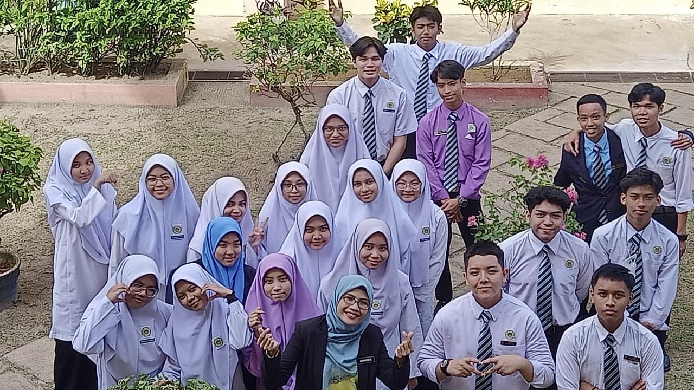
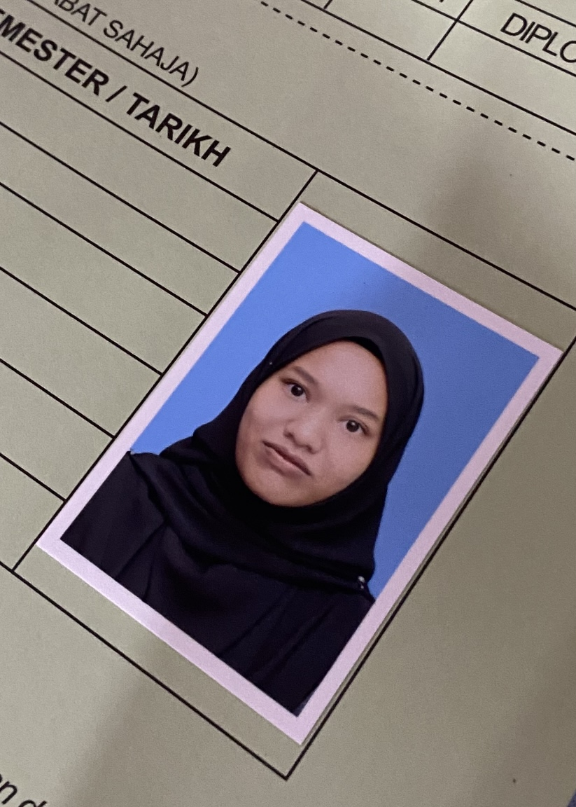

I began attending school when I was three years old. I have forgotten the precise name, but there was a preschool in Bangi, Selangor called PASTI. I was transferred to another PASTI in Shah Alam when I was five years old. I moved to Terengganu when I was six years old, and I changed my PASTI again at Dungun, Terengganu. I made my final PASTI change at PASTI, which is situated in Batu Rakit, Kuala Nerus, Terengganu.
I attended three elementary schools. I attended Sekolah Kebangsaan Mengabang Telipot from January 2012 to September 2013, when I was seven or eight years old. There, my sister and I began our school years. I transferred to Sekolah Kebangsaan Tok Jiring in October 2013. My house is close to this school. I went there for only 4 month. And again, I relocate for the last time to Sekolah Kebangsaan Tanjung Gelam (SKTG) in February 2014. I went there because it's closer to my parents's office. They find it simple to come get me after school.
I completed my UPSR at SKTG, where I stayed for four years. Although I am not a particularly good student, I would say that my performance was ok. I got 1A, 2Bs, and 3Cs. I left primary school there with many fond memories and no disciplinary issues.
As I started form 1, I went to Sekolah Menengah Kebangsaan Kompleks Gong Badak (SMKKGB or KGB). The year was 2018. Up to Form 3, I was enrolled in the computer science stream. Learning that subject was enjoyable. When I took the course, I learnt the fundamentals of Python. So, last semester (third semester), I had no trouble understanding how Python works. In addition to that, I study music. This subject was included in the computer science curriculum. I enjoy going there because I've made a lot of amazing friends and the teachers are amazing.
I just so happened to fill out this one form at the end of 2020. The application pertains to my transfer to Sekolah Menengah Teknik Terengganu, an upscale institution that offers engineering stream courses, which aligned with my goals at the time. Before I officially graduated from secondary school, that was my final school. Excellent grades are definitely not for everyone, as I discovered when I took my Sijil Pelajaran Malaysia (SPM) there. However, I am still able to receive credit for all ten subjects.
Actually, I had intended to enrol in UIA's Asasi Bahasa Melayu course. However, God is wiser than I am. I ultimately enrolled in UiTM Kedah's Diploma in Library Informatics program. I had no idea that this topic would present you with topics you would never be aware of. We learnt a lot about reference, cataloguing books and other resources, what metadata is, and how libraries are now integrated with technology, so we must also be tech-savvy. I've managed to score higher than three points so far in this course. I enjoy this course despite the fact that it is quite demanding and hard to understand.
